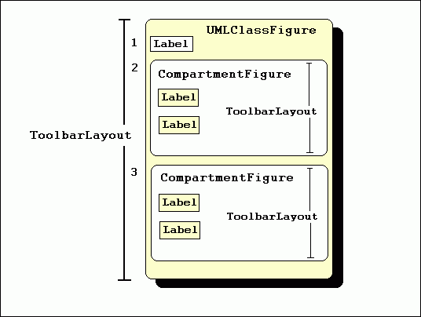
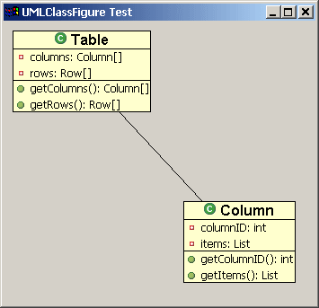
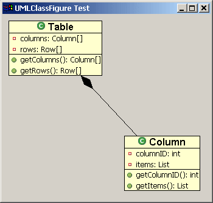
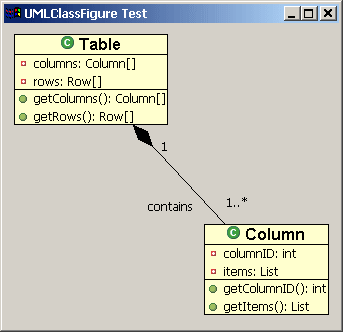

| Eclipse Corner Article |
Summary
The Graphical Editing Framework (GEF) ships with a painting and layout plug-in called Draw2D. Draw2D provides figures and layout managers which form the graphical layer of a GEF application. This article focuses only on the use of Draw2D to render a simple UML class diagram. While Draw2D can be used for standalone purposes, it is not an editing framework. Most applications will use the GEF plug-in as the editing layer.By Daniel Lee, IBM
August 25, 2003
Draw2d provides lightweight rendering and layout capabilities on an SWT Canvas. Figures, Layout Managers, and Borders can be combined and nested to create more complex figures to suit just about any application. Choosing the right combination of figures and layouts to create the desired effect can be a delicate task. This article will walk you through creating a complex figure.
Due to the scope of this article, the example code presented uses
Draw2d in isolation, but most applications will use GEF and Draw2d together.
The example figure is composed of three children figures. The composition itself
is named UMLClassFigure. Its first child, a Label figure,
will display the class name ("Table" in this example). The next
two children are containers for the class' attributes and methods. We
will create a figure called CompartmentFigure for this purpose. Both
the class and compartment figures will use a ToolbarLayout to place
their children. Here is a conceptual diagram of the overall structure:

CompartmentFigure is used to hold both methods and attributes. This class extends org.eclipse.draw2d.Figure, and uses a ToolbarLayout to place its children. In addition, CompartmentFigure uses a custom border. This border simply paints a line 1 pixel in thickness across its top, to serve as the separator between the CompartmentFigures. The code for CompartmentFigure is as follows:
public class CompartmentFigure extends Figure {
public CompartmentFigure() {
ToolbarLayout layout = new ToolbarLayout();
layout.setMinorAlignment(ToolbarLayout.ALIGN_TOPLEFT);
layout.setStretchMinorAxis(false);
layout.setSpacing(2);
setLayoutManager(layout);
setBorder(new CompartmentFigureBorder());
}
public class CompartmentFigureBorder extends AbstractBorder {
public Insets getInsets(IFigure figure) {
return new Insets(1,0,0,0);
}
public void paint(IFigure figure, Graphics graphics, Insets insets) {
graphics.drawLine(getPaintRectangle(figure, insets).getTopLeft(),
tempRect.getTopRight());
}
}
} |
The UMLClassFigure class is in many ways similar to the CompartmentFigure class. It contains three children -- two CompartmentFigures for attributes and methods and a Draw2d Label to display the class name. It also uses a vertically oriented ToolbarLayout to place its children. UMLClassFigure uses Draw2d's LineBorder to draw a box around its edges. The code for the UMLClassFigure class is as follows:
public class UMLClassFigure extends Figure {
public static Color classColor = new Color(null,255,255,206);
private CompartmentFigure attributeFigure = new CompartmentFigure();
private CompartmentFigure methodFigure = new CompartmentFigure();
public UMLClassFigure(Label name) {
ToolbarLayout layout = new ToolbarLayout();
setLayoutManager(layout);
setBorder(new LineBorder(ColorConstants.black,1));
setBackgroundColor(classColor);
setOpaque(true);
add(name);
add(attributeFigure);
add(methodFigure);
}
public CompartmentFigure getAttributesCompartment() {
return attributeFigure;
}
public CompartmentFigure getMethodsCompartment() {
return methodFigure;
}
} |
Draw2d offers a special type of figure, called a connection, for connecting two figures. To create a connection in Draw2d, it is first necessary to establish the two endpoints of the connection. These endpoints are called the source and the target anchors. Endpoints are created using objects that implement the ConnectionAnchor interface. Once these anchors are created, they are set as endpoints via calls to the connection's setSourceAnchor(ConnectionAnchor) and setTargetAnchor(ConnectionAnchor) methods. This is demonstrated below using a ChopboxAnchor. This type of anchor places the connection endpoint on the edge of the figure and causes it to point towards the figure's center.
The following code demonstrates the addition of a connection:
PolylineConnection c = new PolylineConnection(); ChopboxAnchor sourceAnchor = new ChopboxAnchor(classFigure); ChopboxAnchor targetAnchor = new ChopboxAnchor(classFigure2); c.setSourceAnchor(sourceAnchor); c.setTargetAnchor(targetAnchor); |

Two UMLClassFigures connected by a PolyLineConnection
Draw2d also provides means for endpoint decorations, such as
arrow-tips. Staying with the UML theme, we will create a decoration that
represents a composed relationship, which is shown in UML as a filled
diamond. This is done using a PolygonDecoration. The default shape of a
PolygonDecoration is a filled arrowhead, but any shape can be used by creating a template for the decoration using a
PointList, and calling the PolygonDecoration's setTemplate(PointList)
method.
The following code demonstrates the addition of a PolygonDecoration to a Connection:
PolygonDecoration decoration = new PolygonDecoration(); PointList decorationPointList = new PointList(); decorationPointList.addPoint(0,0); decorationPointList.addPoint(-2,2); decorationPointList.addPoint(-4,0); decorationPointList.addPoint(-2,-2); decoration.setTemplate(decorationPointList); c.setSourceDecoration(decoration); |

Connection with a PolygonDecoration
In addition to decorations, it is possible to add other Draw2d figures to the connection itself. This is done by calling the connection's add(IFigure figure, Object constraint) method where 'figure' is the figure that you wish to add, and 'constraint' is an object that implements the Locator interface. The Locator places the figure on the connection. We will use this technique to add labels to our class diagram. The ConnectionEndpointLocator will be used for these labels. This locator places its figure relative to the connection's source or target endpoint. It allows the user to define the distance that the figure will appear relative to the end point via its setUDistance(int) and setVDistance(int) methods. (uDistance is the distance from the connection's owner to the figure. vDistance is the distance from the figure to the connection itself).
The following code demonstrates the use of ConnectionEndpointLocators to add Labels to a Connection:
ConnectionEndpointLocator targetEndpointLocator =
new ConnectionEndpointLocator(c, true);
targetEndpointLocator.setVDistance(15);
Label targetMultiplicityLabel = new Label("1..*");
c.add(targetMultiplicityLabel, targetEndpointLocator);
ConnectionEndpointLocator sourceEndpointLocator =
new ConnectionEndpointLocator(c, false);
sourceEndpointLocator.setVDistance(15);
Label sourceMultiplicityLabel = new Label("1");
c.add(sourceMultiplicityLabel, sourceEndpointLocator);
ConnectionEndpointLocator relationshipLocator =
new ConnectionEndpointLocator(c,true);
relationshipLocator.setUDistance(30);
relationshipLocator.setVDistance(-20);
Label relationshipLabel = new Label("contains");
c.add(relationshipLabel,relationshipLocator);
|

Adding Labels to the Connection
This class contains a main method that creates an SWT shell and
places a Draw2d LightweightSystem on that shell. The LightweightSystem
class provides the link between SWT and Draw2d. The test
class creates a Draw2d figure to act as the contents of the
LightweightSystem and adds two UMLClassFigures to this figure. It then
connects the two class figures with a polyline connection, adds a
diamond polygon decorator, and adds the UML relationship labels to the
connection.
This class uses the following images: { }. Download them and place them at
the root of a Java project directory.
import org.eclipse.draw2d.*;
import org.eclipse.draw2d.geometry.PointList;
import org.eclipse.draw2d.geometry.Rectangle;
import org.eclipse.swt.SWT;
import org.eclipse.swt.graphics.Font;
import org.eclipse.swt.graphics.Image;
import org.eclipse.swt.widgets.Display;
import org.eclipse.swt.widgets.Shell;
/**
* A test class to display a UMLFigure
*/
public class UMLClassFigureTest {
public static void main(String args[]){
Display d = new Display();
final Shell shell = new Shell(d);
shell.setSize(400, 400);
shell.setText("UMLClassFigure Test");
LightweightSystem lws = new LightweightSystem(shell);
Figure contents = new Figure();
XYLayout contentsLayout = new XYLayout();
contents.setLayoutManager(contentsLayout);
Font classFont = new Font(null, "Arial", 12, SWT.BOLD);
Label classLabel1 = new Label("Table", new Image(d,
UMLClassFigureTest.class.getResourceAsStream("class_obj.gif")));
classLabel1.setFont(classFont);
Label classLabel2 = new Label("Column", new Image(d,
UMLClassFigureTest.class.getResourceAsStream("class_obj.gif")));
classLabel2.setFont(classFont);
final UMLClassFigure classFigure = new UMLClassFigure(classLabel1);
final UMLClassFigure classFigure2 = new UMLClassFigure(classLabel2);
Label attribute1 = new Label("columns: Column[]", new Image(d,
UMLClassFigure.class.getResourceAsStream("field_private_obj.gif")));
Label attribute2 = new Label("rows: Row[]", new Image(d,
UMLClassFigure.class.getResourceAsStream("field_private_obj.gif")));
Label attribute3 = new Label("columnID: int", new Image(d,
UMLClassFigure.class.getResourceAsStream("field_private_obj.gif")));
Label attribute4 = new Label("items: List", new Image(d,
UMLClassFigure.class.getResourceAsStream("field_private_obj.gif")));
classFigure.getAttributesCompartment().add(attribute1);
classFigure.getAttributesCompartment().add(attribute2);
classFigure2.getAttributesCompartment().add(attribute3);
classFigure2.getAttributesCompartment().add(attribute4);
Label method1 = new Label("getColumns(): Column[]", new Image(d,
UMLClassFigure.class.getResourceAsStream("methpub_obj.gif")));
Label method2 = new Label("getRows(): Row[]", new Image(d,
UMLClassFigure.class.getResourceAsStream("methpub_obj.gif")));
Label method3 = new Label("getColumnID(): int", new Image(d,
UMLClassFigure.class.getResourceAsStream("methpub_obj.gif")));
Label method4 = new Label("getItems(): List", new Image(d,
UMLClassFigure.class.getResourceAsStream("methpub_obj.gif")));
classFigure.getMethodsCompartment().add(method1);
classFigure.getMethodsCompartment().add(method2);
classFigure2.getMethodsCompartment().add(method3);
classFigure2.getMethodsCompartment().add(method4);
contentsLayout.setConstraint(classFigure, new Rectangle(10,10,-1,-1));
contentsLayout.setConstraint(classFigure2, new Rectangle(200, 200, -1, -1));
/* Creating the connection */
PolylineConnection c = new PolylineConnection();
ChopboxAnchor sourceAnchor = new ChopboxAnchor(classFigure);
ChopboxAnchor targetAnchor = new ChopboxAnchor(classFigure2);
c.setSourceAnchor(sourceAnchor);
c.setTargetAnchor(targetAnchor);
/* Creating the decoration */
PolygonDecoration decoration = new PolygonDecoration();
PointList decorationPointList = new PointList();
decorationPointList.addPoint(0,0);
decorationPointList.addPoint(-2,2);
decorationPointList.addPoint(-4,0);
decorationPointList.addPoint(-2,-2);
decoration.setTemplate(decorationPointList);
c.setSourceDecoration(decoration);
/* Adding labels to the connection */
ConnectionEndpointLocator targetEndpointLocator =
new ConnectionEndpointLocator(c, true);
targetEndpointLocator.setVDistance(15);
Label targetMultiplicityLabel = new Label("1..*");
c.add(targetMultiplicityLabel, targetEndpointLocator);
ConnectionEndpointLocator sourceEndpointLocator =
new ConnectionEndpointLocator(c, false);
sourceEndpointLocator.setVDistance(15);
Label sourceMultiplicityLabel = new Label("1");
c.add(sourceMultiplicityLabel, sourceEndpointLocator);
ConnectionEndpointLocator relationshipLocator =
new ConnectionEndpointLocator(c,true);
relationshipLocator.setUDistance(10);
relationshipLocator.setVDistance(-20);
Label relationshipLabel = new Label("contains");
c.add(relationshipLabel,relationshipLocator);
contents.add(classFigure);
contents.add(classFigure2);
contents.add(c);
lws.setContents(contents);
shell.open();
while (!shell.isDisposed())
while (!d.readAndDispatch())
d.sleep();
}
} |
This article has served as an introduction to the customized use of the Graphical Editing Framework's visual component, Draw2d figures. The concepts of Draw2d connections, decorations, and locators have also been introduced. For more information on GEF, see the GEF website. (http://www.eclipse.org/gef).
The author would like to thank Randy Hudson and Eric Bordeau for providing constructive comments on the article.
Java and all Java-based trademarks and logos are trademarks or registered trademarks of Sun Microsystems, Inc. in the United States, other countries, or both.